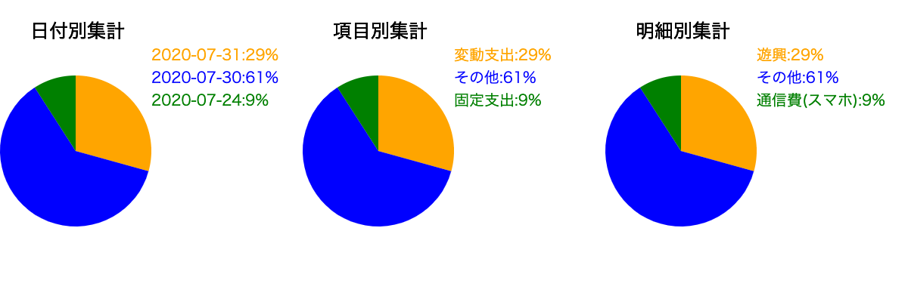

使い方：
①下の1.~ 5.の各項目に値を入力し「読み取り」ボタンクリック
②「読み取り」ボタンクリックしたら再度フォームに値を入力して「読み取り」をクリック
③上記の動作を繰り返す
④支出を全て入力したら「集計」ボタンをクリック
⑤「表の作成」をクリック
以下のような画像が出力されます
一度クリックし終えたら再度1~5のフォームに値を入力してください
1.日付を入力全ての項目を入力し終えたら「②.集計する(一度のみ実行)」、「③.表を作成する(一度のみ実行)」の順にクリックしてください
円グラフと入力した明細が表示されます